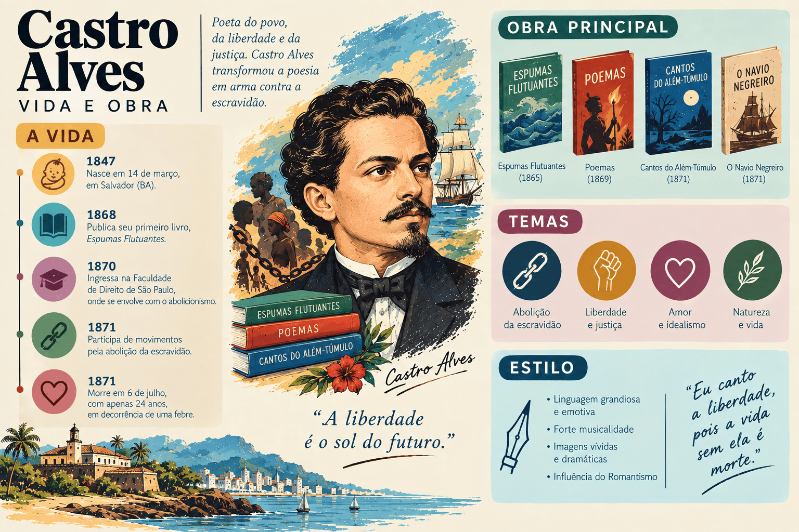

Castro Alves: biografia, obras, características literárias e legado
Castro Alves foi poeta e dramaturgo brasileiro, consagrado como o maior representante da Terceira Geração do Romantismo no Brasil — a geração social, liberal e condoreira. Conhecido historicamente como o "Poeta dos Escravos", transformou a lírica oitocentista em tribuna pública, unindo grandiloquência oratória, imagens hiperbólicas, lirismo amoroso sensual e denúncia implacável contra os horrores da escravidão.
Seu nome completo era Antônio Frederico de Castro Alves. Nascido no interior da Bahia, em 1847, viveu intensamente as agitações estudantis nas Faculdades de Direito do Recife e de São Paulo, o impacto da Guerra do Paraguai e o fortalecimento das campanhas abolicionista e republicana na segunda metade do século XIX.
Autor de Espumas Flutuantes (1870) — único livro de poemas publicado em vida — e de composições imortais reunidas postumamente em Os Escravos (1883), como "O Navio Negreiro" e "Vozes d'África", Castro Alves superou o subjetivismo mórbido do Ultrarromantismo e abriu caminho para a poesia engajada no Brasil, sendo presença indispensável no ENEM, no PAES UEMA e nos principais vestibulares do país.

Castro Alves em resumo
- Nome completo: Antônio Frederico de Castro Alves.
- Nascimento: 14 de março de 1847, na Fazenda Cabaceiras, em Curralinho (atual Castro Alves), Bahia.
- Falecimento: 6 de julho de 1871, em Salvador, Bahia, aos 24 anos.
- Movimento literário: Romantismo — Terceira Geração (Social / Condoreira).
- Epíteto literário: "O Poeta dos Escravos" ou "Cantor dos Escravos".
- Gêneros: poesia social e abolicionista, poesia lírico-amorosa, poesia épico-dramática e teatro (drama histórico).
- Obras principais: Espumas Flutuantes (1870), Gonzaga ou a Revolução de Minas (1867), A Cachoeira de Paulo Afonso (1876, póstuma) e Os Escravos (1883, póstuma).
- Poemas mais famosos: "O Navio Negreiro (Tragédia no Mar)", "Vozes d'África", "O Livro e a América", "Mocidade e Morte" e "Adormecida".
- Instituição: patrono da Cadeira nº 7 da Academia Brasileira de Letras.
- Estilo: condoreirismo, tom oratório e declamatório, hipérboles, antíteses violentas, apóstrofes, erotismo concreto e engajamento humanitário.
Quem foi Castro Alves?
Antônio Frederico de Castro Alves nasceu em 14 de março de 1847, na Fazenda Cabaceiras, próximo à vila de Nossa Senhora da Conceição de Curralinho (município que hoje leva seu nome), no Recôncavo Baiano. Era filho do médico e professor de Medicina Antônio José Alves e de Clélia Brasília da Silva Castro, neta do herói da Independência da Bahia, major Silva Castro (o "Periquitão").
Passou os primeiros anos no sertão e no Recôncavo, convivendo de perto com a paisagem das fazendas e com a dura realidade do cativeiro negro. Em 1854, a família mudou-se para Salvador, onde o menino estudou no conceituado Ginásio Baiano, dirigido pelo educador e filólogo Abílio César Borges (o Barão de Macaúbas).
No ambiente escolar do Ginásio Baiano — onde foi contemporâneo de Rui Barbosa —, Castro Alves revelou precoce vocação para o desenho, a declamação e a poesia, compondo seus primeiros versos aos treze anos de idade.
A vida acadêmica no Recife, o amor por Eugênia Câmara e o debate intelectual
Em 1862, Castro Alves transferiu-se para Pernambuco com o objetivo de ingressar na Faculdade de Direito do Recife, na qual se matriculou em 1864. Na capital pernambucana, tornou-se rapidamente líder estudantil e orador carismático, declamando poemas abolicionistas e republicanos nas sacadas dos teatros e nas assembleias acadêmicas.
No Recife, fundou sociedades abolicionistas ao lado de colegas como Rui Barbosa e protagonizou, em 1866, uma célebre polêmica literária e filosófica na imprensa com Tobias Barreto. No mesmo período, apaixonou-se intensamente pela atriz portuguesa Eugênia Câmara, dez anos mais velha, mulher culta e independente que se tornou a grande musa de sua lírica amorosa e para quem escreveu o drama histórico Gonzaga ou a Revolução de Minas.
Passagem pelo Rio e São Paulo, tragédia pessoal e morte precoce
Em 1868, acompanhado de Eugênia Câmara, Castro Alves viajou à Corte. No Rio de Janeiro, visitou José de Alencar na Tijuca; impressionado com a leitura de Gonzaga e dos poemas abolicionistas do jovem baiano, Alencar escreveu uma famosa carta aberta a Machado de Assis no jornal Correio Mercantil, apresentando Castro Alves como o novo grande poeta nacional.
Em seguida, transferiu-se para a Faculdade de Direito do Largo de São Francisco, em São Paulo, onde declamou em setembro de 1868 sua obra-prima, "O Navio Negreiro", sob aplausos entusiasmados. Pouco depois, porém, sua vida sofreu dois golpes sucessivos: o rompimento definitivo com Eugênia Câmara e, em novembro de 1868, um disparo acidental de espingarda durante uma caçada nos arredores de São Paulo, que lhe feriu gravemente o calcanhar esquerdo.
Com o avanço da gangrena e o agravamento da tuberculose pulmonar que já o debilitava, o poeta precisou amputar o pé no Rio de Janeiro, sem anestesia completa, em 1869. Retornou à Bahia no final daquele ano em busca de recuperação no clima do sertão de Curralinho. Em 1870, viu publicado em Salvador seu livro Espumas Flutuantes. Faleceu em Salvador em 6 de julho de 1871, aos 24 anos de idade.
Contexto histórico: crise da escravidão, Guerra do Paraguai e Terceira Geração Romântica
A produção de Castro Alves desenvolveu-se na década de 1860, momento de profundas transformações políticas e intelectuais no Segundo Reinado:
- o acirramento da questão servil após a extinção formal do tráfico transatlântico (Lei Eusébio de Queirós, 1850) e as pressões internacionais pelo fim da escravidão no Brasil;
- o impacto da Guerra do Paraguai (1864–1870), na qual soldados negros escravizados lutaram lado a lado com homens livres, escancarando a contradição moral de um país que mantinha o cativeiro interno;
- os debates parlamentares que resultariam na Lei do Ventre Livre (setembro de 1871, aprovada apenas dois meses após a morte do poeta);
- a difusão das ideias liberais, republicanas, democráticas e iluministas nas Faculdades de Direito de São Paulo e do Recife;
- a influência direta do Romantismo social francês, sobretudo de Victor Hugo, cuja poesia humanitária e grandiosa inspirou o chamado Condoreirismo no Brasil.
O que é Condoreirismo? O termo deriva do condor, ave de rapina de voo altíssimo que habita a Cordilheira dos Andes. Na literatura brasileira, simboliza uma poesia de "voo alto", ampla visão histórica e defesa da liberdade, que abandona a clausura intimista do eu para observar de cima os grandes dramas sociais da humanidade.
Características literárias de Castro Alves e do Condoreirismo
A poesia de Castro Alves combina vigor retórico, plasticidade visual e renovação do lirismo romântico:
- Poesia social, abolicionista e humanitária: denúncia veemente da escravidão como crime contra a humanidade e mancha vergonhosa na bandeira brasileira, conferindo estatura trágica e heroica ao negro escravizado.
- Tom oratório, declamatório e grandiloquente: poemas construídos para serem recitados em praças, teatros e assembleias, com ritmo cadenciado, perguntas retóricas, exclamações e vocativos diretos.
- Uso intenso de hipérboles, antíteses e apóstrofes: imagens de proporções cósmicas (o oceano, os Andes, o infinito, tempestades) combinadas a contrastes violentos entre luz e trevas, liberdade e grilhões, pureza da natureza e horror do porão negreiro.
- Interpelação direta a Deus, à natureza e aos heróis (apóstrofe): o eu lírico convoca o Senhor Deus dos desgraçados, o mar, as águias, Colombo e José Bonifácio como testemunhas do sofrimento humano.
- Erotismo concreto e mulher real: na lírica amorosa, Castro Alves supera a "virgem pálida e inacessível" da segunda geração romântica; a mulher amada possui corpo, perfume, calor, olhos negros ou cabelos soltos, vivendo encontros amorosos reais e sensuais.
- Exaltação do progresso, da ciência e da educação: celebração da imprensa, do livro, da escola e da locomotiva como instrumentos de emancipação dos povos (como em "O Livro e a América").
- Panteísmo luminoso: ao contrário da noite fúnebre ultrarromântica, a natureza em Castro Alves é solar, grandiosa e solidária às dores e paixões humanas.
As duas vertentes da poesia de Castro Alves
A obra poética de Castro Alves divide-se em dois grandes eixos que se complementam pela mesma intensidade vital e expressiva:
| Aspecto | Vertente Social e Condoreira | Vertente Lírico-Amorosa |
|---|---|---|
| Foco temático | Abolicionismo, república, liberdade dos povos, instrução popular e justiça histórica. | Amor realizado ou nostálgico, sensualidade, juventude e pressentimento da morte. |
| Atitude do eu lírico | Tribuno do povo, profeta indignado e porta-voz dos oprimidos. | Amante apaixonado, terreno e sensível à beleza física e afetiva da mulher. |
| Recursos predominantes | Hipérboles cósmicas, antíteses dramáticas, apóstrofes e polimetria (mudança de metros). | Imagens sensoriais (tato, olfato, visão), musicalidade envolvente e paralelismos. |
| Poemas representativos | "O Navio Negreiro", "Vozes d'África", "Bandido Negro", "Saudação a Palmares", "O Livro e a América". | "Boa Noite", "Adormecida", "O Laço de Fita", "O Gondoleiro do Amor", "Mocidade e Morte". |
Principais obras de Castro Alves
| Obra | Ano | Gênero e importância |
|---|---|---|
| Gonzaga ou a Revolução de Minas | 1867 | Teatro (drama histórico em quatro atos); articula a Inconfidência Mineira à luta abolicionista. |
| Espumas Flutuantes | 1870 | Poesia; único livro de poemas publicado em vida, reunindo lirismo amoroso, meditação e poemas cívicos. |
| A Cachoeira de Paulo Afonso | 1876 | Poema narrativo (publicação póstuma); narra a tragédia dos escravizados Lucas e Maria no rio São Francisco. |
| Os Escravos | 1883 | Poesia social (publicação póstuma); grande projeto abolicionista que inclui "O Navio Negreiro" e "Vozes d'África". |
| Hinos do Equador | 1921 | Poesia (reunião póstuma organizada por Afrânio Peixoto nas Obras Completas). |
Espumas Flutuantes (1870)
Publicado em Salvador poucos meses antes da morte do autor, Espumas Flutuantes traz um prólogo comovente no qual o poeta compara seus versos às espumas brancas que o viajante deixa na esteira do navio pelo oceano. O livro sintetiza a maturidade lírica de Castro Alves.
Nele figuram joias da poesia amorosa brasileira — como "Adormecida" (em que a natureza inteira se enamora da jovem que dorme na varanda), "O Laço de Fita", "Boa Noite" e "O Gondoleiro do Amor" — ao lado de poemas meditativos como "Mocidade e Morte" (originalmente intitulado "O Tísico", onde o jovem poeta, consciente da tuberculose, manifesta profundo amor à vida e à luz) e composições condoreiras como "O Livro e a América" e "Pedro Ivo".
Os Escravos (1883): "O Navio Negreiro" e "Vozes d'África"
Concebido desde a juventude no Recife como um vasto painel épico-lírico contra o cativeiro, Os Escravos só foi editado em livro doze anos após a morte do poeta, embora seus poemas já circulassem amplamente em jornais, folhetos e recitais públicos:
- "O Navio Negreiro (Tragédia no Mar)": escrito em São Paulo em abril de 1868 e dividido em seis partes de métrica variada (polimetria). Nas três primeiras partes, o eu lírico descreve a beleza sublime do oceano, a música dos marinheiros e o voo do albatroz; na quarta parte, ao descer o olhar para o convés do tumbeiro, revela a cena infernal: mulheres, crianças e velhos negros acorrentados e açoitados para dançar sob o estalar do chicote; na quinta parte, ergue um clamor desesperado a Deus ("Senhor Deus dos desgraçados! / Dizei-me vós, Senhor Deus! / Se é loucura... se é verdade / Tanto horror perante os céus?!"); e na sexta parte, invoca Colombo, o Andrada e o "auriverde pendão de minha terra", pedindo que a bandeira nacional não sirva de mortalha a um povo escravizado.
- "Vozes d'África": composto em junho de 1868, dá voz poética ao próprio continente africano personificado. A África dirige-se a Deus como um novo Prometeu acorrentado no deserto, lembrando que seus filhos construíram pirâmides e civilizações, mas há dois milênios sofrem a espoliação da Europa e da América sem que o céu responda ao seu lamento.
- "Saudação a Palmares" e "Bandido Negro": poemas que rompem com a imagem do escravizado apenas passivo ou sofredor, exaltando o Quilombo dos Palmares e a resistência armada negra contra a opressão senhorial.
A Cachoeira de Paulo Afonso (1876)
Integrante original do projeto de Os Escravos e publicado postumamente em 1876, este poema narrativo longo conta a história trágica de Lucas, jovem escravizado lenhador, e Maria, bela mucama. Quando Maria é violentada pelo filho do senhor de engenho, o casal, diante da impossibilidade de justiça e liberdade na sociedade escravista, lança-se em uma canoa nas águas furiosas do rio São Francisco, precipitando-se no abismo da Cachoeira de Paulo Afonso.
As três gerações da poesia romântica no Brasil
Para compreender o papel renovador de Castro Alves, é fundamental comparar sua estética condoreira com as duas gerações românticas que o antecederam:
| Critério | 1ª Geração (Nacionalista / Indianista) | 2ª Geração (Ultrarromântica / Mal do Século) | 3ª Geração (Condoreira / Social) |
|---|---|---|---|
| Principal autor | Gonçalves Dias. | Álvares de Azevedo (ao lado de Casimiro de Abreu, Junqueira Freire e Fagundes Varela). | Castro Alves (ao lado de Sousândrade e Tobias Barreto). |
| Eixo temático | Afirmação da identidade nacional, natureza pátria e heroísmo indígena. | Subjetivismo extremo, tédio, dúvida, noite, sonho e obsessão pela morte. | Liberdade política, abolicionismo, república, progresso e amor sensual. |
| Figura humana central | O indígena idealizado como guerreiro nobre e mítico. | O próprio eu lírico solitário, melancólico e incompreendido. | O negro escravizado, os oprimidos sociais e a mulher real. |
| Visão da mulher e do amor | Amor respeitoso, contido ou marcado pelo desencontro. | Virgem pálida, etérea, intocável ou associada à morte (amor platônico). | Mulher corpórea, sensual, próxima e participante do desejo amoroso. |
| Visão da morte | Sacrifício honroso em combate ou retorno a Deus. | Desejada como refúgio e libertação do sofrimento de viver. | Rejeitada com dor; o poeta quer viver para amar e lutar pela liberdade. |
Ponte para o Realismo e o Parnasianismo: Ao substituir o choro individualista pelo olhar voltado à realidade histórica e ao trabalho plástico das imagens, Castro Alves funcionou como elo de transição entre o Romantismo e as estéticas realistas do final do século XIX.
Versos famosos e seus significados
- “Senhor Deus dos desgraçados! / Dizei-me vós, Senhor Deus! / Se é loucura... se é verdade / Tanto horror perante os céus?!” — estrofe célebre de "O Navio Negreiro", exemplo clássico de apóstrofe condoreira em que o poeta questiona a justiça divina diante da barbárie do tráfico negreiro.
- “Auriverde pendão de minha terra, / Que a brisa do Brasil beija e balança, / Estandarte que a luz do sol encerra / E as promessas divinas da esperança...” — versos finais de "O Navio Negreiro", nos quais a aliteração em /b/ imita o tremular da bandeira antes de denunciar a mancha da escravidão.
- “Deus! ó Deus! onde estás que não respondes? / Em que mundo, em qu'estrela tu t'escondes / Embuçado nos céus? / Há dois mil anos te mandei meu grito, / Que embalde desde então corre o infinito... / Onde estás, Senhor Deus?...” — abertura de "Vozes d'África", na qual o continente africano personificado denuncia o abandono histórico de seus filhos.
- “Oh! Bendito o que semeia / Livros... livros à mão cheia... / E manda o povo pensar! / O livro caindo n'alma / É germe — que faz a palma, / É chuva — que faz o mar.” — estrofe de "O Livro e a América", que exalta a educação e a leitura como forças de libertação social em contraste com a violência das armas.
- “Oh! eu quero viver, beber perfumes / Na flor silvestre, que embalsama os ares; / Ver minh'alma adejar pelo infinito, / Qual branca vela n'amplidão dos mares. / No seio da mulher há tanto aroma... / Nos seus beijos de fogo há tanta vida... / — Árabe errante, vou dormir à tarde / À sombra fresca da palmeira erguida. / Mas uma voz responde-me sombria: / Terás o sono sob a lâjea fria.” — trecho de "Mocidade e Morte", que evidencia a diferença entre Castro Alves e os ultrarromânticos: mesmo doente, o poeta ama a vida e o corpo feminino, encarando a morte como interrupção indesejada.
Importância e legado de Castro Alves
O legado de Castro Alves projetou-se muito além das fronteiras do Romantismo oitocentista:
- Inaugurou a grande poesia social e participante na literatura brasileira, engajando a arte nas lutas históricas do país;
- Colocou o negro escravizado no centro da dignidade trágica e épica da poesia nacional, rompendo com a invisibilidade literária imposta ao africano;
- Forneceu o repertório poético e retórico que inflamou comícios, teatros e jornais até a conquista da Abolição em 1888;
- Renovou a lírica amorosa brasileira ao libertar o erotismo da culpa mórbida ultrarromântica;
- Influenciou gerações posteriores de poetas sociais, de Jorge de Lima e Solano Trindade a Carlos Drummond de Andrade, João Cabral de Melo Neto e Ferreira Gullar;
- Tornou-se o patrono da Cadeira nº 7 da Academia Brasileira de Letras, escolhida em 1897 pelo poeta parnasiano Valentim Magalhães.
Castro Alves no ENEM, no PAES UEMA e nos vestibulares
Castro Alves é um dos poetas mais cobrados nas provas de Linguagens do ENEM, nos vestibulares de todo o país e no PAES UEMA, especialmente em questões que articulam literatura, história da escravidão, direitos humanos e recursos estilísticos.
O que mais aparece nas provas?
- O contraste estrutural em "O Navio Negreiro" entre a harmonia grandiosa da natureza marinha e a degradação desumana no convés do navio;
- As figuras de linguagem típicas do Condoreirismo: hipérbole (exagero grandioso), antítese (oposição luz/trevas, liberdade/escravidão), apóstrofe (chamamento direto a Deus ou à bandeira) e prosopopeia (personificação da África);
- A diferença entre a representação romântica do indígena (em Gonçalves Dias e José de Alencar) e a representação do negro escravizado em Castro Alves;
- O erotismo concreto e a valorização da vida nos poemas de Espumas Flutuantes em oposição ao escapismo fúnebre da Segunda Geração Romântica;
- O diálogo entre o Condoreirismo de Castro Alves e o de seu contemporâneo maranhense Sousândrade (autor de O Guesa).
Como interpretar um poema de Castro Alves?
- Observe os sinais de pontuação expressivos (exclamações, reticências, interrogações) e os vocativos, que revelam o tom de discurso público e oratório.
- Identifique os pares antitéticos: o poeta frequentemente constrói o choque moral contrapondo a grandeza do cosmos à mesquinhez da tirania humana.
- Nos poemas abolicionistas, perceba como o eu lírico busca despertar a indignação ética e a vergonha cívica no leitor brasileiro.
- Nos poemas lírico-amorosos, note a presença dos sentidos físicos (perfumes, calor, toque, olhar) e da natureza luminosa como cúmplice do encontro amoroso.
Erros comuns ao estudar Castro Alves
- Achar que Castro Alves escreveu apenas poesia abolicionista: grande parte de sua obra — incluindo a maioria dos poemas de Espumas Flutuantes — pertence à lírica amorosa e meditativa.
- Supor que "Mocidade e Morte" é um poema ultrarromântico de desejo de morrer: ao contrário de Álvares de Azevedo, Castro Alves não deseja a morte; ele lamenta profundamente ter de morrer jovem quando tanto ama a vida e a liberdade.
- Pensar que o poeta presenciou a assinatura da Lei Áurea (1888): Castro Alves morreu em julho de 1871, dezessete anos antes da Abolição da Escravatura (e dois meses antes da própria Lei do Ventre Livre).
- Acreditar que Os Escravos foi publicado em vida pelo autor: o único livro de poemas lançado em vida foi Espumas Flutuantes (1870); Os Escravos (1883) e A Cachoeira de Paulo Afonso (1876) tiveram edição póstuma em livro.
- Ignorar que sua poesia abolicionista manteve matriz cristã e humanitária: embora critique a omissão histórica perante o cativeiro, sua retórica apoia-se em imagens bíblicas e no ideal liberal de fraternidade universal.
Quiz sobre Castro Alves
Questões de interpretação — nível avançado
Questão 1 — Por que a Terceira Geração do Romantismo brasileiro, liderada por Castro Alves, recebeu a denominação de "Condoreirismo"?
Questão 2 — Em O Navio Negreiro (Tragédia no Mar), qual recurso estrutural é utilizado pelo eu lírico para intensificar o impacto da denúncia contra o tráfico de escravizados?
Questão 3 — Como a lírica amorosa de Castro Alves (em poemas como Adormecida e Boa Noite) diferencia-se da poesia da Segunda Geração Romântica?
Questão 4 — No poema Vozes d'África, quem assume a voz enunciativa principal e qual é o teor de seu discurso?
Questão 5 — Qual foi o único livro de poesias publicado por Castro Alves em vida, lançado na Bahia em 1870?
Questão 6 — Nos versos "Oh! Bendito o que semeia / Livros... livros à mão cheia... / E manda o povo pensar!" (de O Livro e a América), qual ideal da Terceira Geração Romântica se manifesta?
Resumo final sobre Castro Alves
- Castro Alves nasceu em Curralinho (BA) em 1847 e morreu de tuberculose em Salvador em 1871, aos 24 anos.
- É o maior poeta da Terceira Geração do Romantismo brasileiro (Geração Social ou Condoreira).
- Recebeu o título de "Poeta dos Escravos" por sua defesa apaixonada da Abolição da Escravatura.
- Atuou nos meios estudantis das Faculdades de Direito do Recife e de São Paulo, destacando-se como grande orador.
- Publicou em vida o drama Gonzaga (1867) e a coletânea poética Espumas Flutuantes (1870).
- Seus poemas abolicionistas mais célebres — "O Navio Negreiro" e "Vozes d'África" — integraram a obra póstuma Os Escravos (1883).
- Seu estilo caracteriza-se pela eloquência declamatória, pelo uso de hipérboles, antíteses e apóstrofes e pela polimetria.
- Na lírica amorosa, rompeu com o platonismo mórbido ultrarromântico ao celebrar a mulher real e o erotismo sensorial.
- É o patrono da Cadeira nº 7 da Academia Brasileira de Letras e marco da poesia engajada no Brasil.
Perguntas frequentes sobre Castro Alves
Quem foi Castro Alves?
Foi o principal poeta da Terceira Geração do Romantismo brasileiro, consagrado como o "Poeta dos Escravos" por seus poemas abolicionistas e como renovador da lírica amorosa nacional.
O que significa Condoreirismo na literatura brasileira?
É a corrente poética da Terceira Geração Romântica que toma o condor (ave de voo alto dos Andes) como símbolo de uma poesia grandiosa, eloquente e voltada à liberdade e às causas sociais.
Quais são as principais obras de Castro Alves?
Suas obras principais são Espumas Flutuantes (1870), a peça teatral Gonzaga ou a Revolução de Minas (1867) e os livros póstumos A Cachoeira de Paulo Afonso (1876) e Os Escravos (1883).
Qual é o poema mais famoso de Castro Alves?
Seu poema mais conhecido é "O Navio Negreiro (Tragédia no Mar)", escrito em 1868 em São Paulo, que denuncia com força dramática os horrores do tráfico transatlântico de escravizados.
Quais são as principais características da poesia de Castro Alves?
Engajamento abolicionista e republicano, tom oratório e declamatório, uso abundante de hipérboles, antíteses e apóstrofes, exaltação da educação e lirismo amoroso sensual e concreto.
Por que Castro Alves precisou amputar o pé?
Em novembro de 1868, durante uma caçada nos arredores de São Paulo, sua espingarda disparou acidentalmente ao transpor uma vala, ferindo-lhe o calcanhar esquerdo, que gangrenou e precisou ser amputado em 1869.
Qual é a diferença entre o amor em Castro Alves e em Álvares de Azevedo?
Em Álvares de Azevedo (Segunda Geração), a mulher é uma virgem pálida e intocável ligada ao sonho e à morte; em Castro Alves (Terceira Geração), a mulher é real, próxima e desejada com sensualidade e amor à vida.
Quem foi a grande musa inspiradora de Castro Alves?
Sua principal musa foi a atriz portuguesa Eugênia Câmara, com quem viveu um intenso romance entre o Recife, a Bahia, o Rio de Janeiro e São Paulo, inspirando poemas como "Boa Noite" e a peça Gonzaga.
Conteúdos relacionados
- Gonçalves Dias: biografia, obras, características literárias e legado
- Prosa romântica brasileira: autores, obras e vertentes
- Aluísio Azevedo: biografia, obras, características literárias e legado
- Machado de Assis: biografia, obras, características literárias e legado
- Conteúdos de Literatura Brasileira
- Mais conteúdos de Literatura Brasileira
Conclusão
Castro Alves ocupa posição singular na literatura brasileira por ter arrancado a poesia romântica do isolamento individualista para lançá-la no centro das lutas históricas de seu tempo. Em apenas vinte e quatro anos de vida, deu voz monumental ao drama dos escravizados e transformou o verso em instrumento de consciência ética e transformação social.
Ao mesmo tempo em que denunciou as feridas do cativeiro em "O Navio Negreiro" e "Vozes d'África", renovou a expressão do sentimento amoroso em Espumas Flutuantes com frescor, musicalidade e paixão pela existência. Por essa síntese rara entre arte e compromisso humano, sua palavra permanece viva como um dos pontos mais altos da poesia em língua portuguesa.
Referências
- ACADEMIA BRASILEIRA DE LETRAS. Castro Alves: biografia e patrono da Cadeira 7. Disponível em: Acessar.
- BIBLIOTECA NACIONAL DIGITAL. Castro Alves: acervo e obras digitalizadas. Disponível em: Acessar.
- ENCICLOPÉDIA ITAÚ CULTURAL. Castro Alves. Disponível em: Acessar.
- ALVES, Castro. Obra completa. Organização de Eugênio Gomes. Rio de Janeiro: Nova Aguilar, 1997.
- ALVES, Castro. Espumas flutuantes. São Paulo: Penguin-Companhia, 2018.
- BOSI, Alfredo. História concisa da literatura brasileira. São Paulo: Cultrix, 2017.
- CANDIDO, Antonio. Formação da literatura brasileira: momentos decisivos. Rio de Janeiro: Ouro sobre Azul, 2009.
- CUNHA, Fausto. O Romantismo no Brasil: de Castro Alves ao fim do século. Rio de Janeiro: Paz e Terra / INL, 1971.
- PEIXOTO, Afrânio. Castro Alves: o poeta e o poema. São Paulo: Companhia Editora Nacional, 1942.
Explore Outros Conteúdos
Continue seus estudos acessando outras seções do site Mestre Kira: